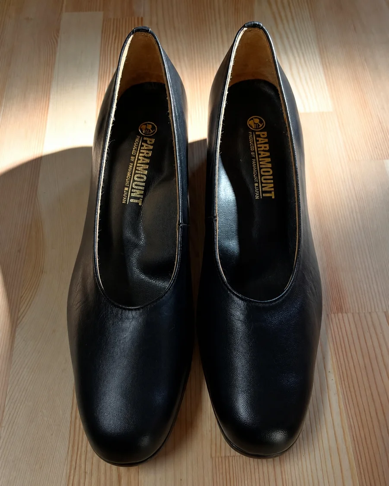
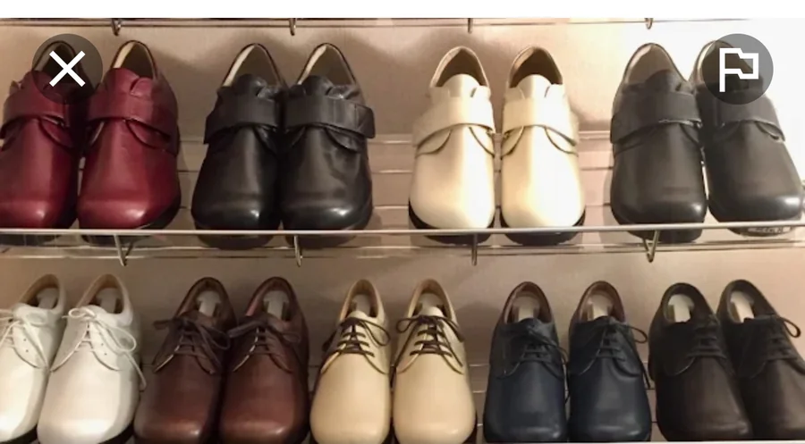
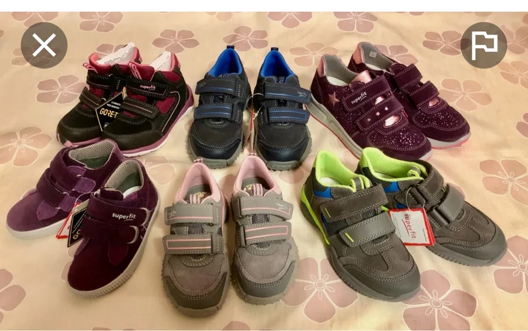
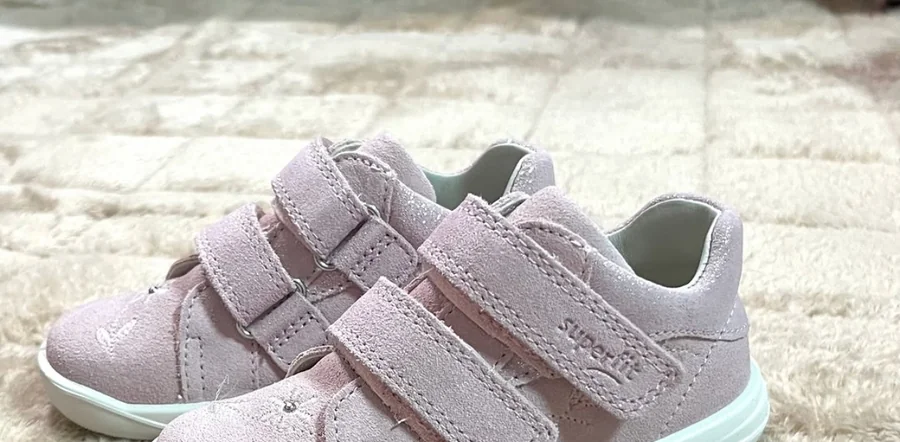
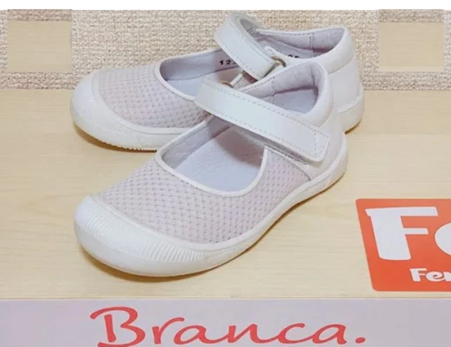
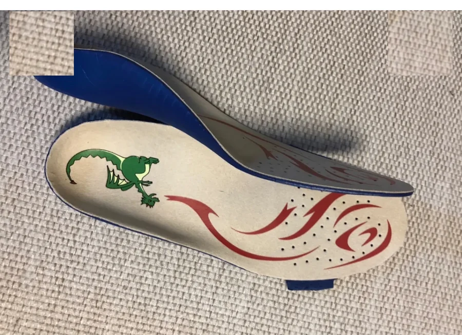
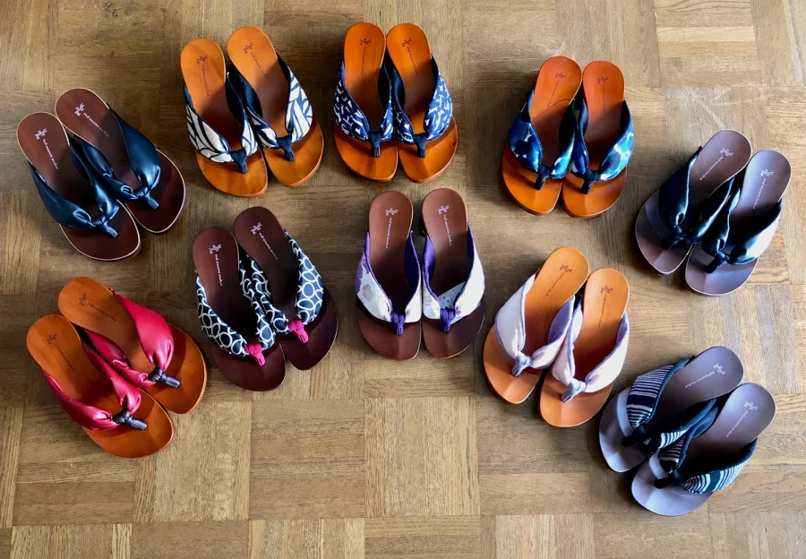
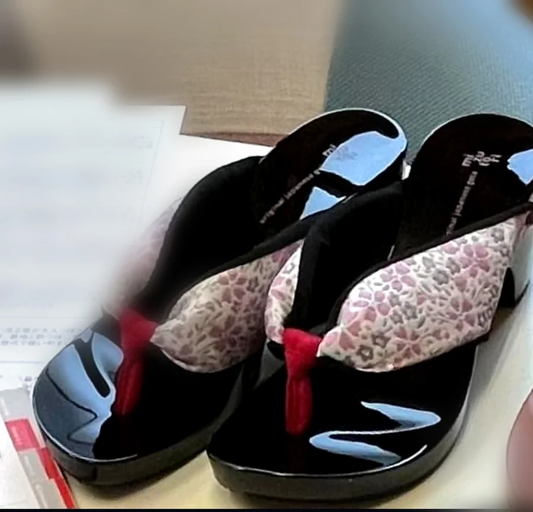
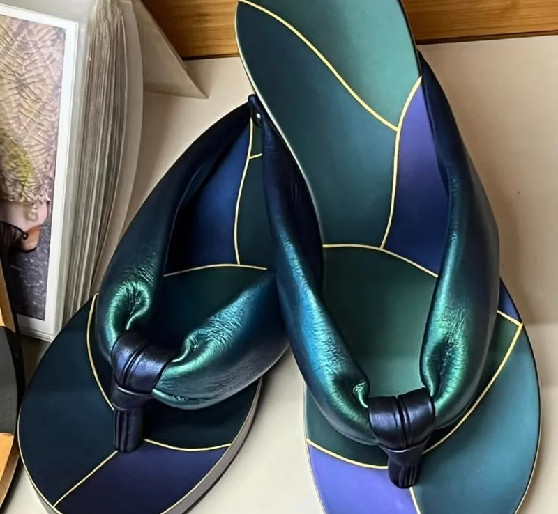
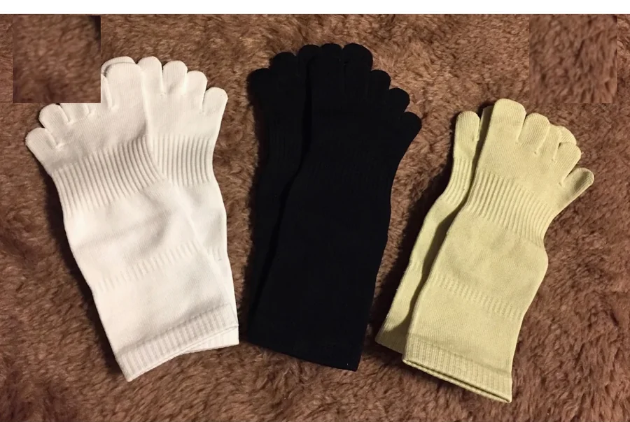

足に合うことも、素敵だと思えることも。
有名なブランドだから、高価だから、誰にでもよい靴になるわけではありません。今の足と、何をして歩きたいのかを伺い、形やサイズ、色やデザインを一緒に考えます。掲載品をそのままおすすめする商品一覧ではなく、相談の入口としてご覧ください。
婦人靴・ウォーキングシューズ
これまで、ケンプランターのセミオーダー靴、フィンコンフォート、タナー社 Fiori、ニューバランス、ミズノ、パラマウント・ワーカーズ・コープ、あゆみシューズなどをご案内してきました。現在の取扱い・サイズ・色・納期は変動するため、ご予約時にご確認ください。長い距離や坂道・階段を歩く方には、踵を深く支える本革のハイカットブーツに、滑りにくく衝撃を吸収するビブラムソール、そして足に合わせたオーダーインソールを組み合わせると、歩きやすさが大きく変わることがあります。踵を合わせて紐を締める正しい履き方があってこそ、これらの力が十分に発揮されます。市販の靴が合いにくい細い足・小さい足・大きい足の方には、サイズ展開の豊富なメーカーもご案内します。
パラマウント・ワーカーズ・コープ（本革パンプス）

コンフォート・ボロネーゼ

長く履いても疲れないデイリーシューズです。21cm〜25cmとサイズ揃えが豊富で、ウィズは3Eよりも細いサイズもあります。基本色以外にもオーダーでき、靴底も選べます。白い皮革と白い靴底で作成すれば院内履きとしても使えます。写真のように紐タイプとベルトタイプがあり、有料の特注加工も対応可能です。価格・仕様は変動する場合があります。最新の内容はご予約時にご確認ください。
あなたの足に合った、足に良い靴を
足が幅広になって合う靴がない、踵がパカパカして歩きづらい、最近足幅が広がってきた気がする、足裏にウオノメ・タコができるようになった、歩くと疲れるので歩きたくない――靴に関するこのようなお悩みはありませんか。合わない靴によって足の変型やトラブルが生じることがあります。
足に合った靴を履くことが大切ですが、なかなか既製品では合う靴が見つからないこともあります。ANDANTINOでは既製品にひと手間加えて足に合わせるサービスと、セミオーダーで足に合った靴を注文いただく方法をご案内しています。長く履く靴だからこそ、足に合った一足を。詳しくはお気軽にお問合せください。
「履きたい」と思える一足を、無理なく
健康のためだけに靴を我慢して選ぶのではなく、仕事の日、街へ出かける日、きちんと装いたい日など、履く場面に似合うことも大切です。パンプスがお好きな方には、足の収まりや安定感を確かめながら、色合わせやヒールの高さも含めて候補を考えます。
二色使いのデザインや約3.5cmのヒール、安定感のある一足です。幅を少し広く、甲を高く、指先部分の高さを増すといった特別注文にも対応でき、色や革もお選びいただけます。秋冬向けのショートブーツもあり、歩行が不安定な方にはオーダーインソールと組み合わせてご提案することもあります。五十嵐洋子が靴を語るときは、足との相性だけでなく、仕上がった一足の素敵さや、履く方の好みも大切な視点です。現在の取扱い・仕様・価格はご確認ください。
子ども靴・上履き・インソール
ANDANTINOはFerse加盟店として、ヨーロッパの子ども靴や、足の特徴に配慮した上履きを扱っています。成長期のため、購入前に足と靴の適合を確認します。
Superfit（スーパーフィット）

ヨーロッパの整形外科医の大多数が推薦するという子ども靴です。未熟な子どもの足を守り育てるために、しっかりと作られています。2本ベルトでよく足にフィットし、細い足で日本の靴では合う靴がないというお子さんにもお勧めしています。歩行が不安定なお子さんにも好評で、後述の「竜のインソール」を挿入されますと、姿勢や歩き方が良くなったと喜ばれています。

Superfitの子ども靴には、同じ足の長さでも「幅広のW」「普通幅のM」「細巾のS」があり、お子さんの足に合う幅を選ぶことができます。ある1歳半の細足の女の子は、細いサイズの【S】が足に合うけれど、好みの色は【S】の取り扱いがなく、店頭にあった紺色の【S】を選ばれました。幼児の足の骨は未熟で、特に踵の関節は傾きやすいため、踵がフィットした靴で育ててあげることが大切です。その後、ピンク色の【S】が入荷して履き替えたところ、サイズはぴったり。合う靴であっても、ベルトをしっかり締めて履くことで、足の上がり方や歩くスピードが変わることも実感していただけました。
Branca（ブランカ）

日本で売られている上履きでは力不足、歩きづらい――そんな細い足のお子さん専用に作られた幼稚園の上履きです。ヨーロッパ基準の機能と日本の子どもの足を考えて作られています。在庫数が限られているため、お早めにお問合せください。
マイスター・ベーレ監修『竜のインソール』

外反扁平足のお子さんの歩行を助けるインソールです。靴のインソールを取り出して挿入します。しっかりとした構造の靴に使用されることで、より効果が期待できます。継続して使用することで足部形成に良い影響を与えるため、半年に1度の足部チェックで経過を観察します。
子ども靴・インソールの価格は変動する場合があります。現在の色・サイズ・在庫・価格はご予約時にご確認ください。
水鳥の下駄・草履
静岡の下駄メーカー「水鳥」の、下駄と草履をご案内しています。着物がお好きな方はもちろん、夏にかかわらず年中お履きいただけます。
水鳥の下駄

「水鳥」の下駄は、履き心地の良い下駄です。鼻緒をしっかり掴んで歩く下駄の良さと、靴の木型で鼻緒をすげているためのフィット感の良さで、疲れにくいのが特長です。静岡で作られ、ファンの多い「水鳥の下駄」は当店のおすすめ商品です。着物がお好きな方、着物を着る機会がある方はもちろん、夏にかかわらず年中お履きいただけます。ぜひ実際に履き心地を確かめにご来店ください。柄・在庫により価格が異なりますので、最新の内容はご予約時にご確認ください。
水鳥の草履


冠婚葬祭・きもの用から普段使いまで、色柄違いをご案内しています。柄・在庫により価格が異なりますので、最新の内容はご予約時にご確認ください。
「あなたを支える靴下」
和歌山で作られたサポート力のある五本趾靴下です。レギュラー丈とショート丈があり、白・黒・ウグイス、SS〜Lサイズをご案内していました。

先染めの糸をとても強く編むことで、中足骨と足趾がしっかり締めつけられます。趾先が開き、まっすぐに伸びます。そのためにバランスが良くなり歩幅が伸び、歩くスピードが上がることで筋肉がつき身体全体に好影響が生まれます。最初は硬くて履きづらいですが、慣れれば大丈夫です。この靴下でなければ、というファンが多い靴下です。
商品の効能を保証するものではありません。素材、色、サイズ、最新価格、在庫、足との相性はお問い合わせください。
在庫・価格・取り寄せ
靴や関連商品の在庫、価格、入荷時期は変わります。最新情報はお電話・公式LINEでご確認ください。通信販売をご希望の場合は、商品、数量、送料、支払方法、発送予定、返品条件をご確認いただいてからご注文ください。
特定商取引法に基づく表記もご確認ください。
同じサイズ表示でも木型や構造でフィットは異なります。「このメーカーなら大丈夫」と決めず、できる限り店頭で足を測り、踵を合わせて履き、実際に歩いて一緒に確かめましょう。
在庫や取扱いを確認する
お探しの用途・サイズ・お困りのことをお知らせください。